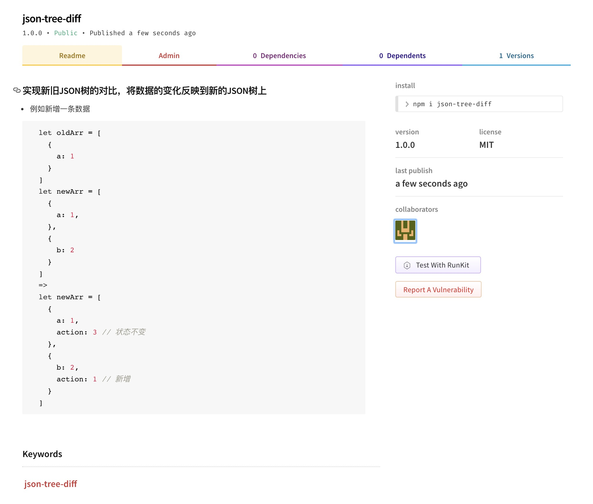

如何发布一个npm应用？
2018-08-19
前言
我们每天都需要安装各种各样的npm，那npm是如何发布到远程仓库呢？了解npm从coding，到push至npm仓库的过程，有助于我们更好的调试npm包。下面以我自己写的一个json-tree-diff包为例，展示一个npm包从编写到发布的过程。
初始化一个项目
1 | mkdir json-tree-diff |
构建一个项目
1 | npm init |
初始化你的npm包
name: 项目的名称，确保在npm包里是独一无二的。
version: 版本号。
description: 包描述。
entry point: 包主入口文件。
test command: 测试命令。一般是npm run test，上线之前确保你的包有测试用例。
git repository: git远程地址，随便填写一个，后期项目上传之后修改。
keywords: 关键词，方便npm包检索，与html中keywords有点像。
author: 这个不解释。
license: MIT或者ISC，我也不懂有什么区别，反正MIT就对了。
最后有一个is OK？的确认选项，回车就对了。
添加开源协议
1 | The MIT License (MIT) |
把year换成时间，copyright holders换成你的名字即可
添加README.md等文件
俗话说的好，一个项目是否有人用，README.md起了很大作用。所以可以模仿知名项目的md，例如create-react-app，React等。
添加一些其他的辅助文件，比如.gitignore，如果你引用了其他的npm包，还需要包括package-lock.json，yarn.lock，eslint等相关文件。
编写代码
在根目录新建一个index.js文件，下面只是测试代码，没有什么实际意义，只是方便大家理解。1
2
3
4
5
6
7module.exports = function(oldJson, newJson) {
if (oldJson === newJson) {
return true;
} else {
return false;
}
}
发布npm包
在https://www.npmjs.com上注册一个账号，一定要记住自己的账号密码，我刚刚吃过亏。
在本地添加npm账户
1 | npm adduser |
填入对应username，password，email。
这里有一个坑，如果你之前安装npm用的是淘宝的镜像，是无法登录成功的。所以需要调整会npm本身安装的地址：
1 | npm config set registry https://registry.npmjs.org/ |
我在登录过过程中，还遇到这个的报错（下面代码）。 不知道是我英文不好，还是报错提示不友好，我一直以为是哪里的配置有问题，结果我上网查了很多资料才发现，有可能是我的账号密码错误了。Error message when enabling 2-factor authentication for NPM，stackoverflow还是那么给力。
1 | npm ERR! code EAUTHIP |
- 发布应用
1 | npm publish --access=public |
通过上面命令即可发布成功，前提是确保你的包名称独一无二。
- 测试包是否可用
不要在当前目录下安装刚上传的包
1 | npm install json-tree-diff |
报错1
2
3
4npm ERR! code ENOSELF
npm ERR! Refusing to install package with name "json-tree-diff" under a package
npm ERR! also called "json-tree-diff". Did you name your project the same
npm ERR! as the dependency you're installing?
用其他项目测试，你也通过https://www.npmjs.com查找你的包。
下图为包发到npm之后，在npm官网查询之后的结果。

总结
npm提供了一个公共的仓库容纳所有个人开发者的工具包，我们在发布自己的包之前一定要确认可用，易阅读，安全，npm前段时间刚出现安全漏洞。公共的环境每个人都有责任维护。
写作时间：
20180819